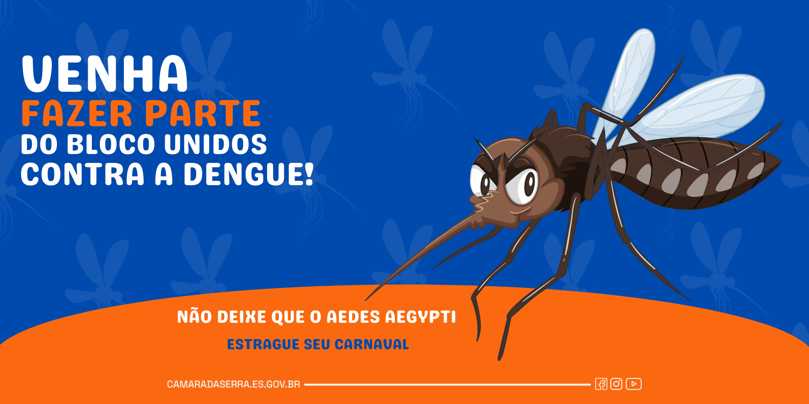
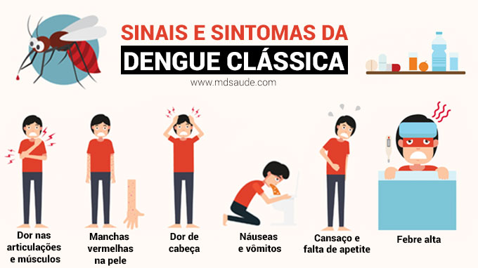
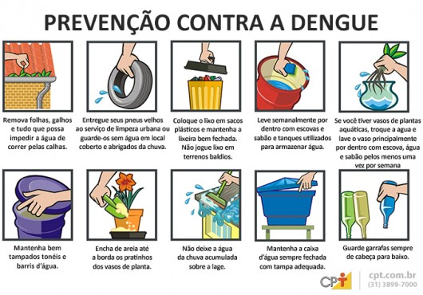

Contra a dengue
O que é a dengue ?
É uma doença infecciosa febril aguda, que pode se apresentar de forma benigna ou grave, dependendo de alguns fatores, entre eles: o vírus envolvido,
infecção anterior pelo vírus da dengue e fatores individuais como doenças crônicas (diabetes, asma brônquica, anemia falciforme).
Transmissão
A dengue é uma doença viral transmitida por mosquitos que nos últimos anos se espalhou rapidamente por todas as regiões da Organização
Mundial da Saúde (OMS). O vírus da dengue é transmitido por mosquitos fêmea, principalmente da espécie Aedes aegypti e, em menor proporção,
da espécie Aedes albopictus
Simtomas
Febre alta (40°C)
Forte dor de cabeça
Dor atrás dos olhos
Náusea
Vômitos
Mancha vermelha na pele

Combate ao mosquito
Verificar se a caixa d’água está bem tampada.
Deixar as lixeiras bem tampadas.
Colocar areia nos pratos de plantas.
Recolher e acondicionar o lixo do quintal.
Limpar as calhas.
Cobrir piscinas.
Tapar os ralos e baixar as tampas dos vasos sanitários.
Limpar a bandeja externa da geladeira.
Limpar e guardar as vasilhas dos bichos de estimação.
Limpar a bandeja coletora de água do ar-condicionado.
Cobrir bem a cisterna.
Cobrir bem todos os reservatórios de água.
Como combater
A melhor forma de prevenção da dengue é evitar a proliferação do mosquito Aedes Aegypti, eliminando água armazenada que podem se tornar possíveis criadouros, como em vasos de plantas, lagões de água, pneus, garrafas plásticas, piscinas sem uso e sem manutenção, e até mesmo em recipientes pequenos, como tampas de garrafas.
Roupas que minimizem a exposição da pele durante o dia - quando os mosquitos são mais ativos - proporcionam alguma proteção às picadas e podem ser uma das medidas adotadas, principalmente durante surtos. Repelentes e inseticidas também podem ser usados, seguindo as instruções do rótulo. Mosquiteiros proporcionam boa proteção para aqueles que dormem durante o dia, como bebês, pessoas acamadas e trabalhadores noturnos.
No momento, só existe uma vacina contra dengue registrada na Anvisa, que esta disponível na rede privada. Ela é usada em 3 doses no intervalo de 1 ano e só deve ser aplicada, segundo o fabricante, a OMS e a ANVISA, em pessoas que já tiveram pelo menos uma infecção por dengue.
Esta vacina não está disponível no SUS, mas o Ministério da Saúde acompanha os estudos de outras vacinas

Tratamento
Para aliviar os sintomas, é necessário a prescrição de analgésicos, além de repouso, tudo com o devido acompanhamento médico.
A pessoa com suspeita de dengue não deve se automedicar, pois há medicamentos que acarretam a piora do quadro,
como os salicilatos (AAS, por exemplo).
Ainda não existe tratamento especifico para a doença